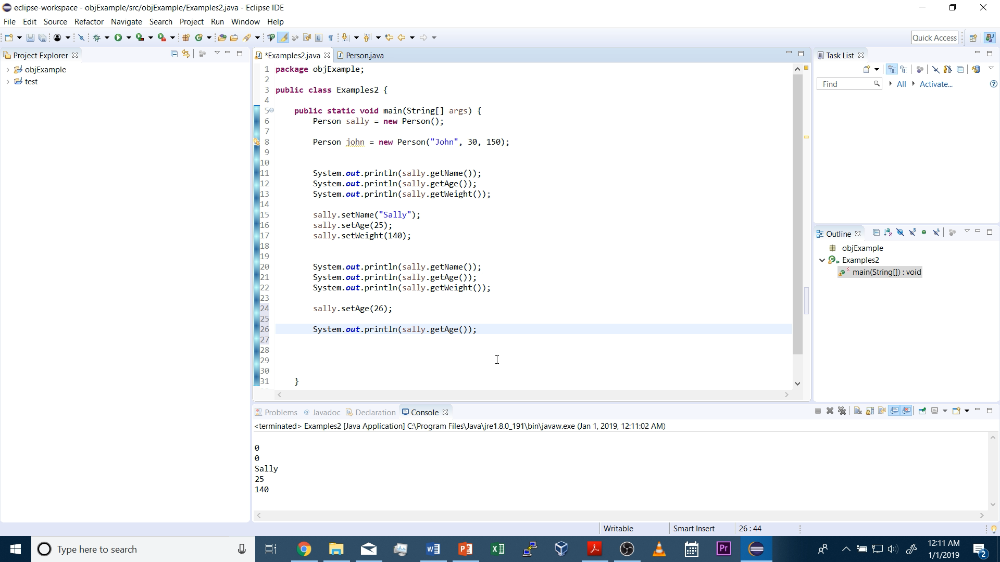

Lesson 1: Introductory Concepts and Installing Eclipse
Lesson 1 Video:
What is a Program?
All of us have used a program before, a video game, a text editor, or a calculator app are all examples of programs. In the bare bones definition, programs are really just a set of instructions the computer executes. For example, in the video game tetris, a continuous loop of code which detects for player input and then updates the graphics to the screen is being run by the computer.
Programs are also extremely flexible in what they can do. Think of all the different things you can do on your computer, from watching a movie to writing a paper to procrastinating your homework on YouTube. Once you learn how to code you are limited by only your imagination as to what you want to create. You simply need to be able to instruct the computer what to do with your code, and that is where algorithms come in.
Algorithms:
Algorithms are the instructions that the programs run. Think of algorithms as a recipe or a set of instructions. If I said "I'm going to share my chocolate chip cookie recipe with you" vs. if I said "I'm going to share my chocolate chip cookie algorithm with you," I would be saying the exact same thing! (My cookies taste pretty bad though)
Algorithms can range from simple to incredibly complex. For example, an algorithm to compare two numbers is pretty simple. It might look something like this:
- Check to see if the first number is bigger, and if it is tell the person the first number is greater than the second.
- Check to see if the second number is bigger, and if it is tell the person the second number is greater than the first.
- Otherwise tell the person that they are equal.
The more complex algorithms…well those get really complicated just think of how complicated the instructions to program artificial intelligence would be.
Algorithms have to be precise. Have you ever been using a calculator and accidentally punched in a wrong digit or forgot a parentheses, and that messed up your entire answer. I certainly have! A calculator isn’t able to interpret what you “meant” to type in. It only calculates exactly what you type in even if you’ve made a mistake. Algorithms are the exact same way, you need to tell them specifically what to do.
Looking back at my algorithm for comparing two numbers, imagine if I forgot the last step of “Otherwise tell the person that they are equal,” well you might think “Obviously! If one number isn’t greater than the other they have to be equal.” Well you would be right, but my point is that when you are writing an algorithm, the computer won’t know this because a computer can’t interpret anything no matter how obvious.
What is Java?
Java is a programming language. A programming language is exactly what it sounds like: a language that we write our code in to program computers. Just how people can speak and understand languages, computers can interpret programming languages, and just like how some people can understand multiple languages computers can understand multiple programming languages. A few examples of other programming languages are Python, C++, and Assembly. Certain programming languages may be better suited for different tasks, but here are a few advantages of Java that make it a good first language to learn.
Advantages of Java:

- Easy to learn. Java takes care of a lot of the behind these scenes tasks that you might have to take care of manually with another language. For example, in C++ you have to properly manage the computer’s memory, but Java does that for you.
- High level programming language. This essentially means our code is going to look closer to a human language. Machines technically only understand numbers, but writing code in numbers is not practical.
- Platform Independent Our Java code will run the same regardless of whether you are using the Windows, Mac, or Linux operating system.
Eclipse and JDK:
If you already have JDK and a editor of your choice set up you can skip this section
You are going to need to install:
- Eclipse
- Java Development Kit: (Java but for Developers)
The instructions for installation on windows are in the video (skip to 0:45). If you have a mac or don't want to watch the video there are plenty of online guides to get these two things installed. I also teach you how to navigate Eclipse and run your first program.
Eclipse is an Integrated Developer Environment (IDE for short). This is where you will be writing and running your code. Eclipse is what I use, and I find it to be a great IDE for student. However, if you prefer another IDE or if you school is requiring that you use something different this is completely ok. As long as you have some way of writing and compiling Java code.
What the Eclipse IDE looks like:
Exercise 1.1:
This exercise is meant to make sure you know your way around the Eclipse Developer Environment and that Java is working properly on you computer.
- Print "./Learn is cool" to the console
- Print "I am happy" to the console
Hint: skip to 1:45 in the video